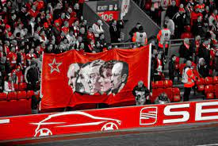
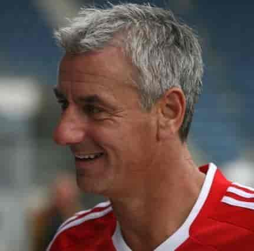
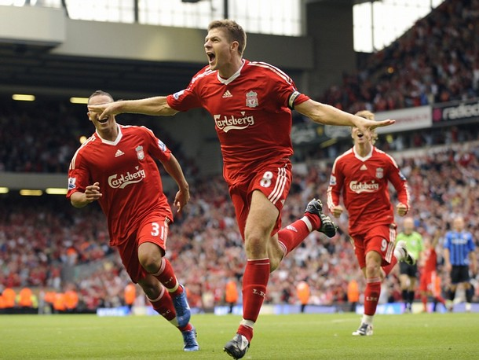

História do Clube
Bob Paisley
O Gênio Silencioso
Nascido em 1918 Bob fez história no Liverpool, único time que treinou na vida, vivendo a melhor era dos Reds de todos os tempos. Já falecido (14/02/1996) conquistou três Champions League e seis Premier League, entre outros títulos. Paisley viveu o Liverpool intensamente, primeiro como jogador, depois como fisioterapeuta e por fim treinador.
Homenagens
| Partidas | Vitórias | Empates | Derrotas |
|---|---|---|---|
| 535 | 308 | 131 | 96 |
Títulos
20 Títulos conquistados como treinador da equipe
6 Premier League
Em uma década conquistou 6 campeonato inglês. Jamais visto antes, em tão pouco tempo.
3 Champions League
Metade do que o clube tem, Bob Paisley conquistou, na competição mais importante entre os clubes.
entre outros títulosIan Rush
O maior artilheiro da história do Liverpool
Atuou pelo Liverpool entre a década de 1980 e 1990, o Galês que quando criança foi torcedor do Everton, fez história com a camisa dos Reds, se tornando o maior artilheiro do clube com 349 gols marcados. Chegou a equipe com 18 anos um pouco subestimado, além disso sua primeira temporada não anotou gols e foi colocado para venda. Após seu primeiro gol pela equipe na segunda temporada, Ian deslanchou e se tornou um dos principais jogadpres da equipe, ajudando a conquistar diversos títulos.
Robbie Fowler
O primeiro fato curioso é que ele também era torcedor do rival Everton, porém vitorioso com a camisa dos Reds, maior artilheiro do Liverpool na Premier League. Teve duas passagens pelo clube, uma de 1993 a 2001 e retornou a equipe em 2007
Steven Gerrard
Um do maiores meio campista da história do futebol inglês foi revelado no Liverpool, Steven Gerrard atuou no clube de 1998 até 2015, ama o Liverpool como ninguém e jogava como poucos, tinha um bom chute, fazia gols e marcava bem, era praticamente completo. Foi capitão da equipe por quase todo tempo que jogou nela, sempre compareceu como protagonista em jogos decisivos. A final da Champions de 2004/2005, na maior virada do futebol, Gerrard foi eleito melhor em campo e a equipe se sagrou campeã após 25 anos sem conquistar o maior campeonato de clubes da Europa.
